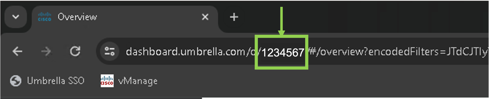
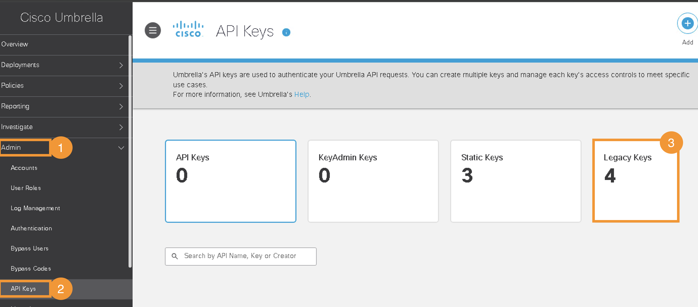
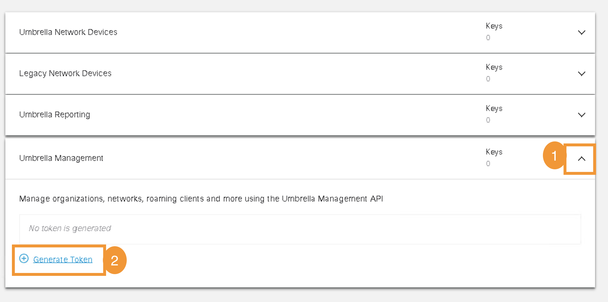
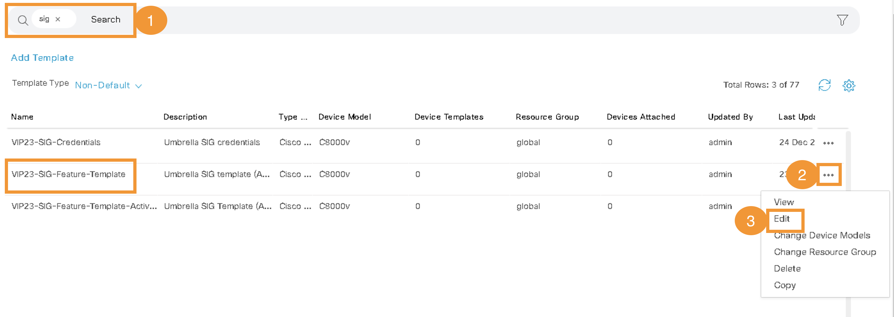
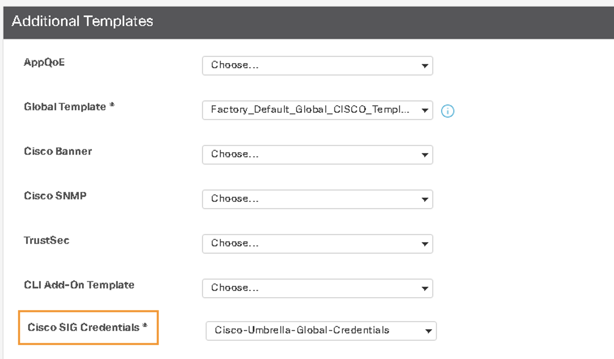

Task 5: Umbrella integration with Site-300
In this task we will intergrate Site-300 with Cisco Umbrella. As a result of this integration, SD-WAN Site-300 and Umbrella will have active & backup IPSec tunnels and IP traffic from this site will be routed externally (Public Cloud, SaaS applications, Public Internet etc) via Umbrella. This integration will allow to monitor and enforce Security capabilities from Umbrella cloud - this part will be done in a later task.
Step 1 - Umbrella Organization ID
- On the RDP session (jumphost), logon to Umbrella Dashboard by clicking on Google Chrome Browser bookmark named
Umbrella SSO. It will automtically open the Umbrella dashboard and auto-login using single-sign-on.

| Note: |
|---|
| Click through the security warning to ignore the certificate (if prompted). |
- Umbrella organization (Org) is a separate instance of Umbrella and has its own dashboard. An
Org IDis used to identify each organization and for integrating Umbrella with Cisco SD-WAN. ThisOrg IDis a number and part of the Umbrella web URL and must be extracted from the URL. ThisOrg IDwill be required at a later step as part of vManage configurations for Umbrella SIG integration. Once you are logged into the Umbrella dashboard, extract[Org ID]from the URL in the address bar as per below syntax:
https://dashboard.umbrella.com/o/[Org ID]/#/...
Below figure is only an example showing Org ID of 1234567:

Step 2 - Umbrella API Key
We will generate an API token (Key, Secret) from the Umbrella dashboard, which will be used in the SD-WAN (vManage) configurations in later step.
-
After logging on Umbrella dashboard (as per previous step), navigate to Admin > API Keys page.
-
On this page, Click on
Legecy Keys. Next, click onUmbrella Managementand then click onGenerate Tokenas shown in below figures. This will generate APIKeyandSecret
 
- You must copy both
KeyandSecreton a notepad - this information, along withOrg IDin pervious step will be used later on during vManage configurations.
| Note: |
|---|
You must copy both Key and Secret in a notepad. It is only shown on this page once and will not be visible afterwards. |
Step 3 - Update SIG Feature Template on vManage
Now we will add these Umbrella API credentials (Key & Secret) along with Org ID in vManage configurations. This will allow vManage to automate IPSec tunnel configurations as part of it's workflow.
- On vManage, navigate to Configuration > Templates as shown below:

- Then click on
Feature Templatestab as shown in below screenshot:

- Then in the search bar type
sigand find the template with name ofVIP23-SIG-Feature-Template. Further, click on three dots (...) at the right side of this feature template and click Edit as shown in below Figure:

- Click on "Click here to create - Cisco SIG Credentials Template" as shown in below Figure:

- Enter Umbrella
Org ID,KeysandSecretthat were copied & saved in previous steps and then clickSaveon this page:

- Then click
Updateat the bottom of the page:

After successfully saving Umbrella API Token credentials, in the next step, let's apply this Feature template to Site300-cE1 Device template so IPSec tunnels can be established between Umbrella SIG and Site300-cE1.
Step 4 - Apply SIG Feature Template on vManage
The previously saved SIG template will be applied to Site300-cE1 device for Umbrella SIG integration i.e. setting up IPSec tunnels with between Site300 and Umbrella cloud.
- On vManage, navigate to Configuration > Templates. And then click on
Device Templatesas shown below:

- Search for the Site300-cE1 device in the
Descriptionfield. Then click on three dots (...) at the right side of Site300-cE1 and click Edit as shown in below Figure:

- Once the
Device Templateis open, Click on theTransport and Management VPNto navigate to that section:

- Click on
Cisco Secure Internet Gatewayto add this template to the Device. After adding it, select its value ofVIP23-SIG-Feature-Templatefrom the drop-down menu as shown in below Figure:

- Scroll all the way down to
Additional Templatessection and ensure Cisco SIG Credentials ofCisco-Umbrella-Global-Credentialsare selected:

-
Now click
Updateon this page -
Then click
Nextto proceed forward with configuration:

- Click
Configure Devicesat the bottom of the page to push the configuration from vManage towards cEdge:

- Lastly, wait and verify that Config-Push from vManage to cEdge device is
Success
Now the configurations for IPSec tunnels creation between Site-300 cEdge and Umbrella cloud are done.
Step 5 - Verify SIG Tunnels
In this step we will confirm that the IPSec tunnels between Umbrella cloud and SD-WAN Site-300 are UP by accessing Umbrella dashboard.
-
If access to Umbrella dashboard is not already open, on the RDP session, launch Google Chrome and click on
Umbrella SSObookmark to open up a session to Umbrella dashboard. -
After successful login to Umbrella Dashboard, navigate to Deployments > Core Identities > Network Tunnels

- It will take few minutes for tunnels to be Active. The tunnels will remain in
Unestablished Tunnelsstate initially. After few minutes there should be 2Active Tunnelsas shown in below screenshot:

-
Using mRemoteNG application on RDP session, launch console session of Ubuntu
Site300-Ubuntu-VPN10host (Virtual Machine / VM). -
Within the console of this Ubuntu VM, launch the Web Browser application and access website
welcome.umbrella.com. This is to verify if Site-300 is protected by Umbrella. What message do you see when you try to access this website?

Why did it fail?
It failed because the traffic from SD-WAN site is still routed through the normal interface and not through the IPSec tunnels. We have to create a Service Route to redirect traffic from SD-WAN site on Umbrella SIG Tunnels towards Umbrella Cloud - this will be performed in next step.
Step 6 - Redirect Traffic to SIG tunnels
Let's add a Service Route to SIG in order to redirect traffic from VPN-10 on Site-300 towards Umbrella cloud.
- On vManage, navigate to Configuration > Templates. And then click on
Feature Templates:
- In search bar type
vpn_10_site300_ce1. From the search results, locate this template and Click the three dots (...) on the right side of this template. Then clickEditin the dropdown menu as shown in below Figures:

- On the next page, Click
Service Routeto navigate to that section:

- Then on this section, Click on
New Service Routeand Add a route as per: Prefixof0.0.0.0/0ServiceofSIG(default setting)- Click
Addand thenUpdateat the bottom of the page as shown in below Figure:

-
Click
Nextand then clickConfigure Devices -
Lastly, wait and verify that Config-Push from vManage to cEdge device is
Successas shown below:

- Using mRemoteNG application on RDP session (Jumphost), launch console session of ubuntu
Site300-Ubuntu-VPN10VM again. Launch Chromium Web browser and check again by browsing towelcome.umbrella.comURL/website. TheWelcome to Umbrellamessage indicates that the site is now protected by Umbrella - specifically the traffic in VPN-10 of Site-300 is protected by Umbrella.

- On the console session of ubuntu VM
Site300-Ubuntu-VPN10(by using mRemoteNG application), verify traffic routing on this Site-300 by running below command:
traceroute 8.8.8.8
From the output of traceroute, what do you notice different to the output in earlier task on this VM/host? (Tip: hop count etc)